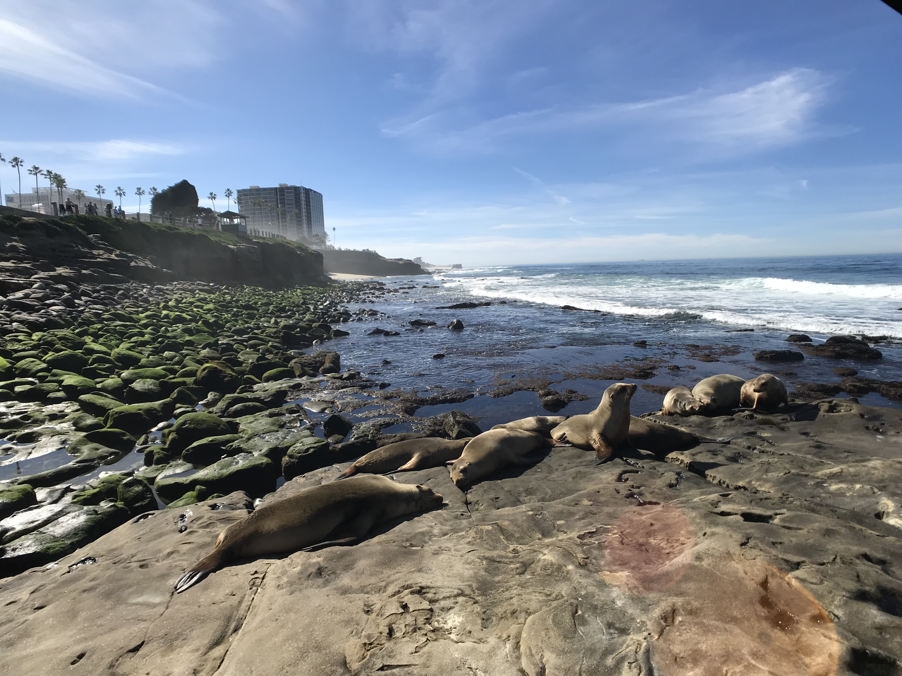
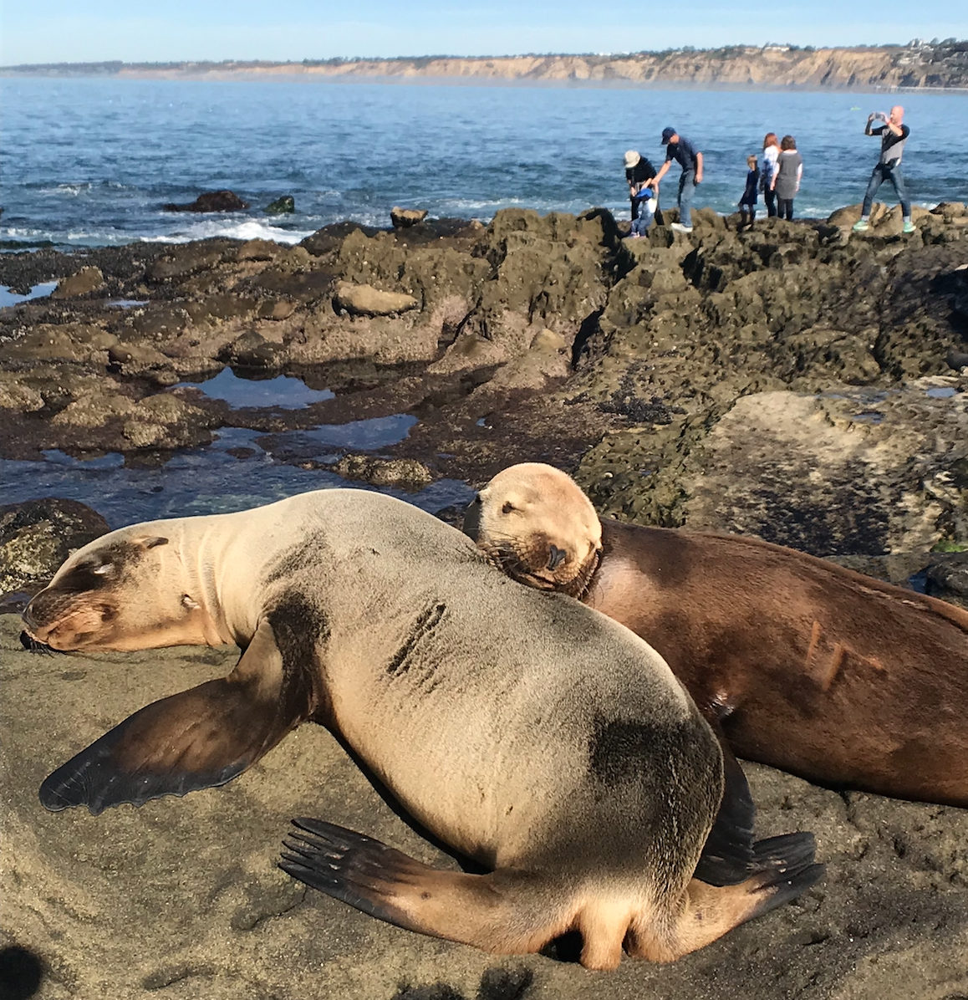

-
La Jolla
January 13, 2018
San Diego 的人對這個地方只有滿滿的愛與稱讚，來過的人可以說是零負評，大家都說這裡像天堂一樣！這裏的天氣極好，美麗的海灘、街上眾多好吃的食物和精采的夜生活，讓這裡成為美國的度假勝地。導覽的巴士開在路上，運動酒吧裡整群歡愉的人們、路上正進行 Skateboard tour 的人們，都很熱情地向巴士揮手。走在街上或海邊，聖地牙哥人看起來都非常 laid back，心情放鬆、愉悅、充滿活力。
這裡沒有私人海灘，海灘旁邊有許多免費的停車位，為的就是讓 SD 的人們能愉快方便地造訪海灘。這裡有許多可愛的小平房，並沒有很多高樓大廈，而保有美好的天際線。這裡的機場只有一條跑道，這架飛機升，那架飛機降，輪流交替，意外地運作順暢。SD 機場是美國大城市中，唯一一座機場位在類似小鎮的地區，機場旁放眼望去都是小平房。導遊開玩笑說，走出機場會有種「我是誰？我在哪裡？」的感覺XD 但其實，從這所謂的「小鎮」開一陣子，就能很快地進入 downtown 或海灘，對旅客來說是非常方便。
在聖地牙哥，你能找到幾乎任何你想做的運動。水上運動種類豐富（潛水、衝浪、帆船等等，海邊也能很容易找到教練或體驗班）之外，參與腳踏車或滑板導覽，穿行於這座城市（或小鎮XD）之中，也是很棒的享受。
聖地牙哥非常靠近墨西哥，搭乘 trolley 到一家 factory mall，從那邊過了橋便能到墨西哥，因此這裡也融合了來自各地的文化。例如 Old Town 就充滿墨西哥風情，非常熱情有活力，廣場中央有樂隊演奏，台前人們隨歌起舞，悠閒又享受。
La Jolla - Sealions
La Jolla - Sealions